红队基础设施建设与改造（四）——深入解析Cobaltstrike（二开环境与认证过程分析）
文章其实22年就写了，因为一些原因没有发，本来是笔记，删删改改处理了一些东西后发布
之前研究的版本太老了，找个稍微新一点的版本，选用CS4.5进行研究，另外，刚好官方文档描述CS4.5更新了license验证机制，官网链接https://www.cobaltstrike.com/blog/cobalt-strike-4-5-fork-run-youre-history
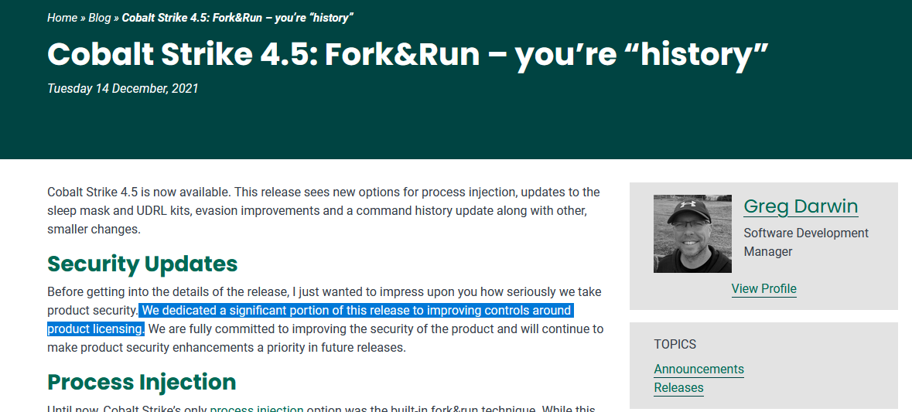
二开环境配置
下载完先和官网对比一下hash值避免被加料
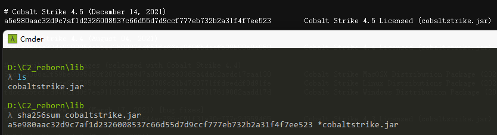
反编译的方法很多就不赘述了，百度一下能搜到一堆（jd、java-decompiler…）但是由于有些工具无法识别lambda表达式，因此选择的时候建议找个合适的
并在dependencies中加入依赖，直接添加library或从jar包添加都行
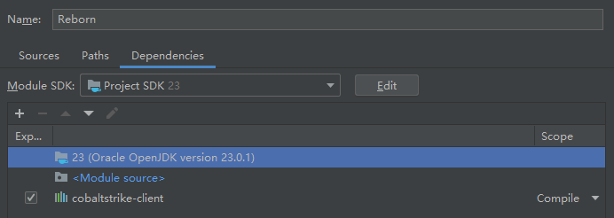
CS的启动类为aggressor.Aggressor，将该文件复制到src目录下，配置Artifact选项，以生成jar包，其中Manifest文件复制lib中的Manifest即可，之后编译Artifact包
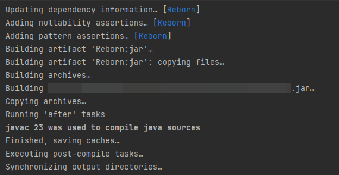
启动前添加配置，其中JAR地址为刚刚编译的jar包，VM选项为
-XX:ParallelGCThreads=4 -XX:+AggressiveHeap -XX:+UseParallelGC
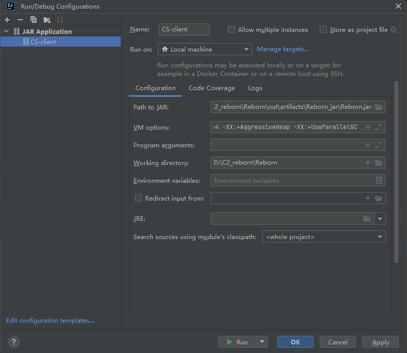
在代码中加入一个弹窗显示消息，并测试是否能够成功执行
JOptionPane.showMessageDialog(null,"CS4.5 Modified BY:Y4ph3tS");
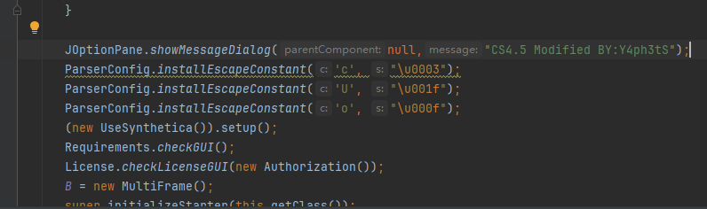
通过刚刚配置好的模板运行，弹出窗口即成功
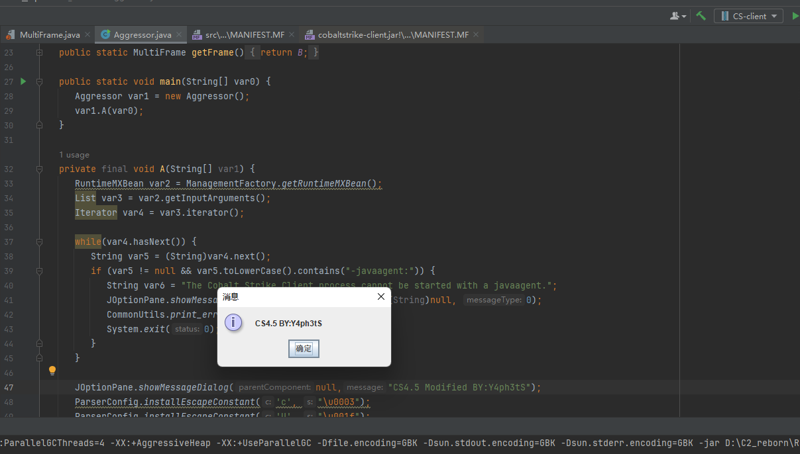
认证流程简析与去暗桩
由于是原版没有进行破解，所以之后会报错退出，接下来研究一下验证的逻辑，并且进行暗桩的去除
beacon/BeaconData.java
shouldPad设置为false
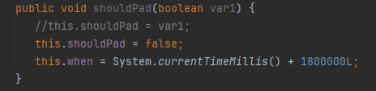
beacon/CommandBuilder.java
在文件最后的static方法中，有大量对变量var1的修改，分析后发现是校验逻辑之一，如果var1为false则程序退出，因此只需保证var1永真
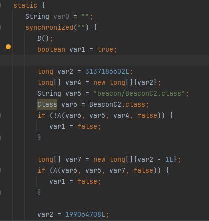
接下来分析核心部分common/Authorization.java，其中主要步骤是校验cobaltstrike.auth，其中对auth文件进行了校验，读取到auth文件并经过格式校验后，调用AuthCrypto的decrypt进行解密
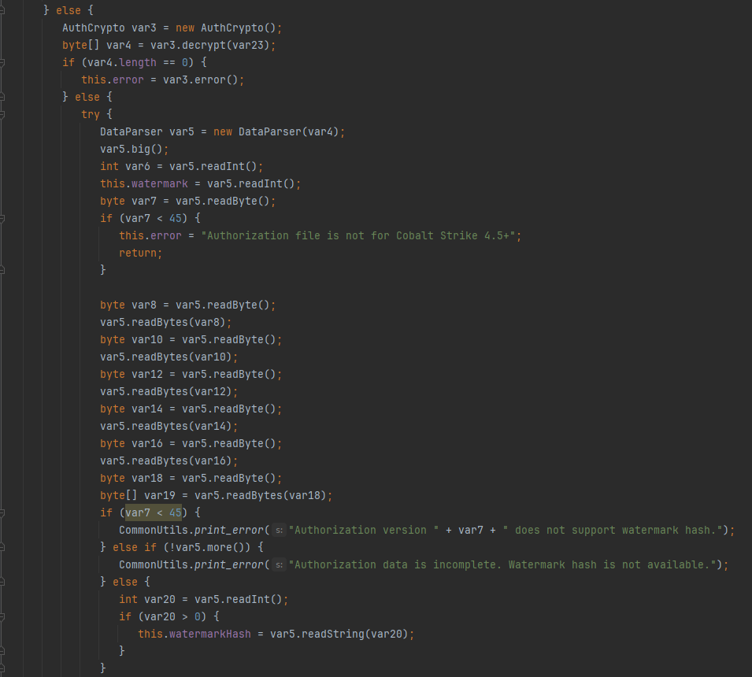
跟进AuthCrypto，可见其中有一个RSA Key验证操作，先读取authkey.pub公钥文件的md5值，如果通过验证就获取其中的公钥值，生成的操作，
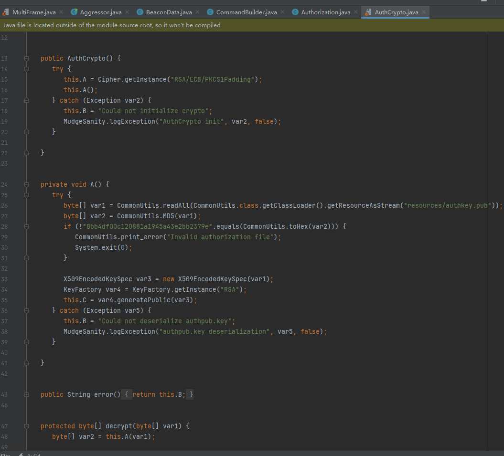
完整代码如下：
public AuthCrypto() {
try {
this.A = Cipher.getInstance("RSA/ECB/PKCS1Padding");
this.A();
} catch (Exception var2) {
this.B = "Could not initialize crypto";
MudgeSanity.logException("AuthCrypto init", var2, false);
}
}
private void A() {
try {
byte[] var1 = CommonUtils.readAll(CommonUtils.class.getClassLoader().getResourceAsStream("resources/authkey.pub"));
byte[] var2 = CommonUtils.MD5(var1);
if (!"8bb4df00c120881a1945a43e2bb2379e".equals(CommonUtils.toHex(var2))) {
CommonUtils.print_error("Invalid authorization file");
System.exit(0);
}
X509EncodedKeySpec var3 = new X509EncodedKeySpec(var1);
KeyFactory var4 = KeyFactory.getInstance("RSA");
this.C = var4.generatePublic(var3);
} catch (Exception var5) {
this.B = "Could not deserialize authpub.key";
MudgeSanity.logException("authpub.key deserialization", var5, false);
}
}
public String error() {
return this.B;
}
protected byte[] decrypt(byte[] var1) {
byte[] var2 = this.A(var1);
try {
if (var2.length == 0) {
return var2;
} else {
DataParser var3 = new DataParser(var2);
var3.big();
int var4 = var3.readInt();
if (var4 == -889274181) {
this.B = "pre-4.0 authorization file. Run update to get new file";
return new byte[0];
} else if (var4 != -889274157) {
this.B = "bad header";
return new byte[0];
} else {
int var5 = var3.readShort();
byte[] var6 = var3.readBytes(var5);
return var6;
}
}
} catch (Exception var7) {
this.B = var7.getMessage();
return new byte[0];
}
}
private byte[] A(byte[] var1) {
byte[] var2 = new byte[0];
try {
if (this.C == null) {
return new byte[0];
} else {
synchronized(this.A) {
this.A.init(2, this.C);
var2 = this.A.doFinal(var1);
}
return var2;
}
} catch (Exception var6) {
this.B = var6.getMessage();
return new byte[0];
}
}
}
authkey.pub在反编译出的resources目录下，可以通过ASN1editor去看看公钥
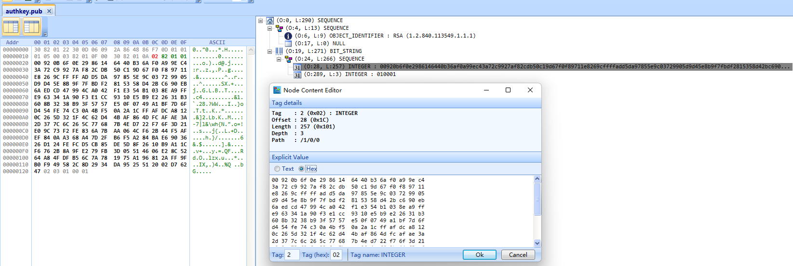
简单了解了decrypt函数所在的AuthCrypto类后，回到authorization，解密完后，就开始读取auth文件中对应内容，包含水印版本，中间没调用的部分为读取后跳过，未给相关变量赋值参与校验过程，在后面会提到

根据和历史版本的比较，多了一个watermark水印部分，全局搜索字符串推测应该和beacon生成有关
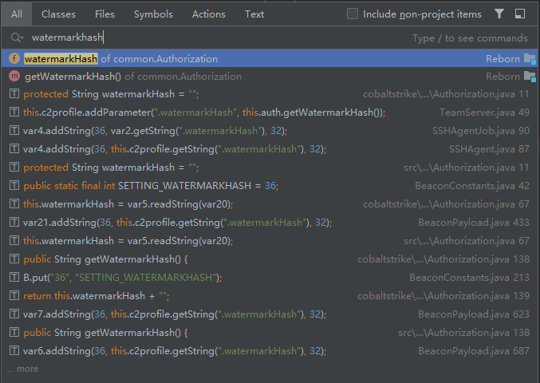
继续往后分析，其中的var6应该是时间信息，如果值为0x1C9C37F则有效时间为永久，否则则对有效期进行格式化
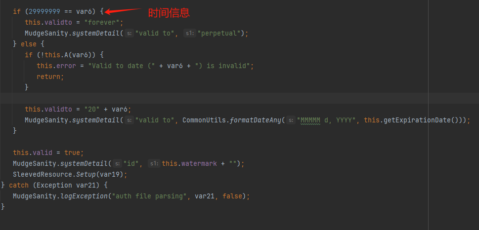
翻了半天逻辑，没有auth文件还是没办法啊，RSA非对称密码算法使用公钥加密，私钥解密，没有auth文件无法进行伪造，只能找大佬的方法硬编码
byte[] var4 = {1, -55, -61, 127, 0, 1, -122, -96, 45, 16, 27, -27, -66, 82, -58, 37, 92, 51, 85, -114, -118, 28, -74, 103, -53, 6, 16, -128, -29, 42, 116, 32, 96, -72, -124, 65, -101, -96, -63, 113, -55, -86, 118, 16, -78, 13, 72, 122, -35, -44, 113, 52, 24, -14, -43, -93, -82, 2, -89, -96, 16, 58, 68, 37, 73, 15, 56, -102, -18, -61, 18, -67, -41, 88, -83, 43, -103, 16, 94, -104, 25, 74, 1, -58, -76, -113, -91, -126, -90, -87, -4, -69, -110, -42, 16, -13, -114, -77, -47, -93, 53, -78, 82, -75, -117, -62, -84, -34, -127, -75, 66, 0, 0, 0, 24, 66, 101, 117, 100, 116, 75, 103, 113, 110, 108, 109, 48, 82, 117, 118, 102, 43, 86, 89, 120, 117, 119, 61, 61};
其实硬编码后就相对好分析了，看一下逻辑是调用了DataParser函数进行解析，该函数在common/DataParser.java中
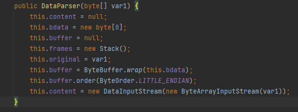
将byte数组按大端字节序处理后，开始按位取相应的变量进行处理，根据上面已经截图的逻辑，最终将这段字符串格式化如下：
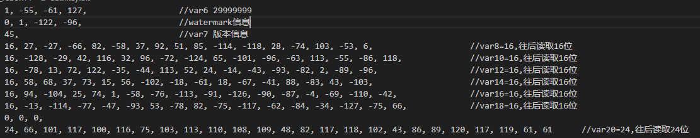
基于此前版本比较，比之前版本新增的主要字段为watermarkhash，解密sleeve的为var19，跟一下SleevedResource类，可以看到一个调用registerkey的操作
private SleevedResource(byte[] var1) {
this.A.registerKey(var1);
}
registerkey定义在SleeveSecurity类中，其中定义了AES、HmacSHA256解密的密钥，使用传入的值计算一个长度为256的摘要，再取0-16作为AES的密钥，取16-32作为HmacSHA256的密钥
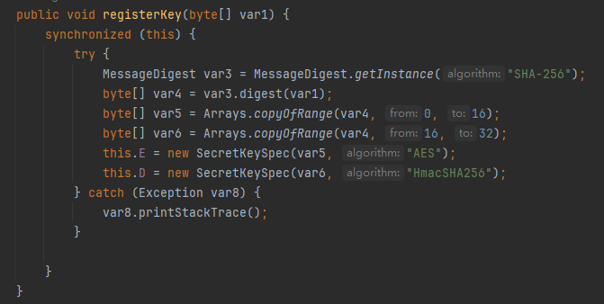
如果没有获取到key，无法进行解密，因为只有在解密sleeve中的dll后才能正常上线，分析整个文件
package dns;
import common.CommonUtils;
import common.MudgeSanity;
import java.io.ByteArrayInputStream;
import java.io.ByteArrayOutputStream;
import java.io.DataInputStream;
import java.io.DataOutputStream;
import java.security.InvalidKeyException;
import java.security.MessageDigest;
import java.util.Arrays;
import javax.crypto.Cipher;
import javax.crypto.Mac;
import javax.crypto.SecretKey;
import javax.crypto.spec.IvParameterSpec;
import javax.crypto.spec.SecretKeySpec;
public class SleeveSecurity {
private IvParameterSpec B;
private Cipher A;
private Cipher C;
private Mac F;
private SecretKeySpec E;
private SecretKeySpec D;
public void registerKey(byte[] var1) {
synchronized(this) {
try {
MessageDigest var3 = MessageDigest.getInstance("SHA-256");
byte[] var4 = var3.digest(var1);
byte[] var5 = Arrays.copyOfRange(var4, 0, 16);
byte[] var6 = Arrays.copyOfRange(var4, 16, 32);
this.E = new SecretKeySpec(var5, "AES");
this.D = new SecretKeySpec(var6, "HmacSHA256");
} catch (Exception var8) {
var8.printStackTrace();
}
}
}
public SleeveSecurity() {
try {
byte[] var1 = "abcdefghijklmnop".getBytes();
this.B = new IvParameterSpec(var1);
this.A = Cipher.getInstance("AES/CBC/NoPadding");
this.C = Cipher.getInstance("AES/CBC/NoPadding");
this.F = Mac.getInstance("HmacSHA256");
} catch (Exception var2) {
throw new RuntimeException(var2);
}
}
protected byte[] do_encrypt(SecretKey var1, byte[] var2) throws Exception {
this.A.init(1, var1, this.B);
return this.A.doFinal(var2);
}
protected byte[] do_decrypt(SecretKey var1, byte[] var2) throws Exception {
this.C.init(2, var1, this.B);
return this.C.doFinal(var2, 0, var2.length);
}
protected void pad(ByteArrayOutputStream var1) {
for(int var2 = var1.size() % 16; var2 < 16; ++var2) {
var1.write(65);
}
}
public byte[] encrypt(byte[] var1) {
try {
ByteArrayOutputStream var2 = new ByteArrayOutputStream(var1.length + 1024);
DataOutputStream var3 = new DataOutputStream(var2);
var2.reset();
var3.writeInt(CommonUtils.rand(Integer.MAX_VALUE));
var3.writeInt(var1.length);
var3.write(var1, 0, var1.length);
this.pad(var2);
Object var4 = null;
byte[] var12;
synchronized(this) {
var12 = this.do_encrypt(this.E, var2.toByteArray());
}
Object var5 = null;
byte[] var13;
synchronized(this) {
this.F.init(this.D);
var13 = this.F.doFinal(var12);
}
ByteArrayOutputStream var6 = new ByteArrayOutputStream();
var6.write(var12);
var6.write(var13, 0, 16);
byte[] var7 = var6.toByteArray();
return var7;
} catch (InvalidKeyException var10) {
MudgeSanity.logException("[Sleeve] encrypt failure", var10, false);
CommonUtils.print_error_file("resources/crypto.txt");
MudgeSanity.debugJava();
if (this.E != null) {
CommonUtils.print_info("[Sleeve] Key's algorithm is: '" + this.E.getAlgorithm() + "' ivspec is: " + this.B);
}
} catch (Exception var11) {
MudgeSanity.logException("[Sleeve] encrypt failure", var11, false);
}
return new byte[0];
}
public byte[] decrypt(byte[] var1) {
try {
byte[] var2 = Arrays.copyOfRange(var1, 0, var1.length - 16);
byte[] var3 = Arrays.copyOfRange(var1, var1.length - 16, var1.length);
Object var4 = null;
byte[] var14;
synchronized(this) {
this.F.init(this.D);
var14 = this.F.doFinal(var2);
}
byte[] var5 = Arrays.copyOfRange(var14, 0, 16);
if (!MessageDigest.isEqual(var3, var5)) {
CommonUtils.print_error("[Sleeve] Bad HMAC on " + var1.length + " byte message from resource");
return new byte[0];
} else {
Object var6 = null;
byte[] var15;
synchronized(this) {
var15 = this.do_decrypt(this.E, var2);
}
DataInputStream var7 = new DataInputStream(new ByteArrayInputStream(var15));
int var8 = var7.readInt();
int var9 = var7.readInt();
if (var9 >= 0 && var9 <= var1.length) {
byte[] var10 = new byte[var9];
var7.readFully(var10, 0, var9);
return var10;
} else {
CommonUtils.print_error("[Sleeve] Impossible message length: " + var9);
return new byte[0];
}
}
} catch (Exception var13) {
var13.printStackTrace();
return new byte[0];
}
}
}
以前写的流程有点复杂，参考大佬写的流程图，原文链接：https://xz.aliyun.com/t/8557
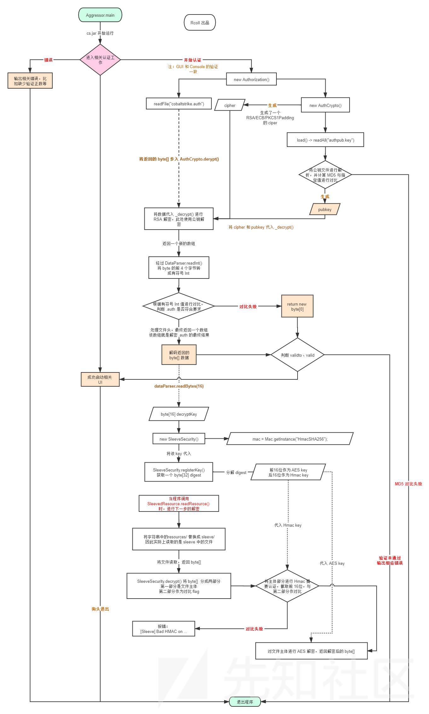
将auth硬编码写入后发现仍报错无法找到，说明其中还有其他校验逻辑
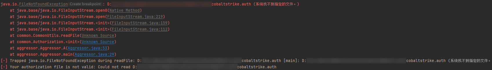
在common/Helper.java中还有校验逻辑，注释代码保证var2永真，其中给到了其他的一些依赖的提示（怎么有点像CTF不是），刚好再去跟一下其他几个类
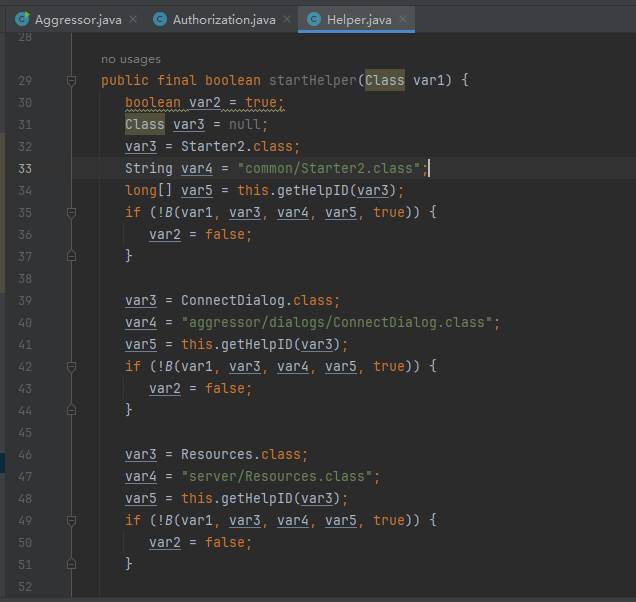
common/starter.java和common/starter2.java
其中有很多暗桩，会导致退出程序和校验，把exit方法注释，下面的函数也是，保证var2永真
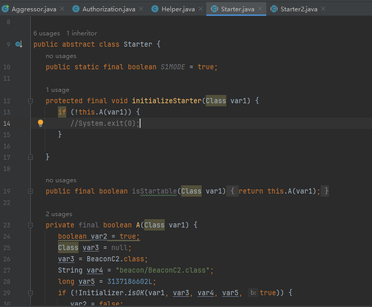
如果找不到问题在哪退出的就下断点调试，但是调试可能会有个坑，如果用IDEA进行调试的话，下了断点以后启动会报异常退出
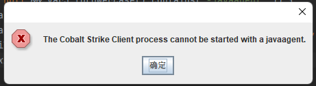
全局搜索一下字符串定位异常代码，发现就在Aggressor和Teamserver里，找到对应代码注释就完了，就可以解决无法调试的问题
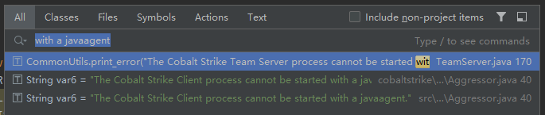
插入一点分析的Tips：首先是找暗桩，重点关注System.exit()函数
对Teamserver进行配置，启动命令为
java -Dfile.encoding=UTF-8 -XX:ParallelGCThreads=4 -Dcobaltstrike.server_port=[Teamserver端口] -Dcobaltstrike.server_bindto=0.0.0.0 -Djavax.net.ssl.keyStore=./cobaltstrike.store -Djavax.net.ssl.keyStorePassword=[证书密码] -server -XX:+AggressiveHeap -XX:+UseParallelGC -classpath ./Reborn.jar -Duser.language=en server.TeamServer [ip地址] [连接密码]
重新编译后启动即可成功加载，由于机器上有之前连过的机器，因此在Profile处会显示
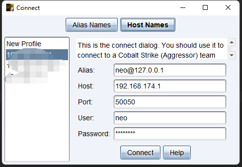
流量特征checksum8算法修改
先改大家都知道的最常见的checksum8算法，全局搜索定位checksum8算法，修改原算法，将下面的92L和93L修改为其他值并修改原算法
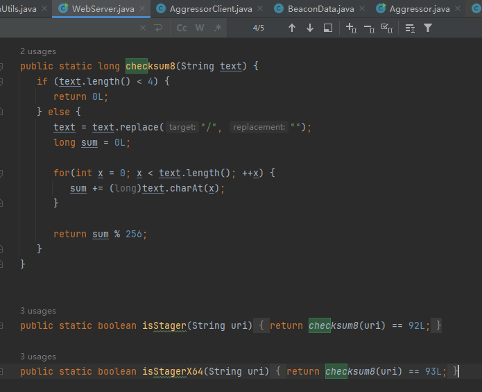
修改完成对应算法后修改下面isStager和isStagerX64中的92和93两个值，修改为经过新算法算出来的特定值
然后再修改CommonUtils中的MSFURI和MSFURI_X64，保证其返回值传入上文中isStager中后计算得到的值相同，否则将无法连接
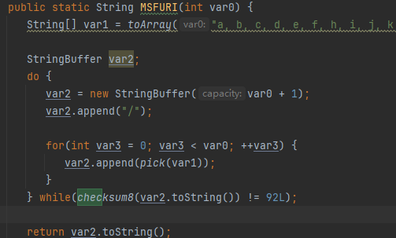
修改完编译完成后记得测试一下是否能成功上线
Beacon解析与Sleeve DLL修改
因为这部分涉及到Beacon，就顺便写一下Beacon的分析，Beacon信标是Cobalt Strike 运行在目标主机上的 Payload，配合各种方式来实现持久化控制，其中较为出名的发源是从vault7中泄露的蜂巢计划，参考链接https://wikileaks.org/vault7/#Hive
首先从BeaconPayload.java进行分析，其中有一个配置解析部分，对var21进行解析，其实就是Beacon的解析，其中有各种分离出的字段
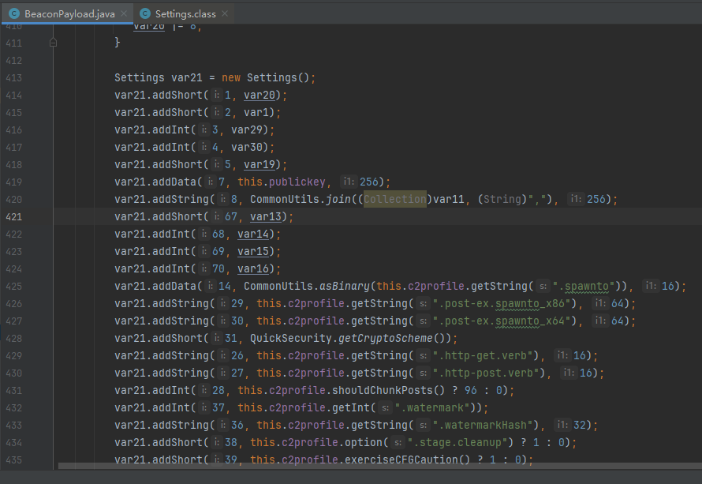
解析完成后将string转换为byte数组，然后进行异或，并将剩余字符串填入随机字符串
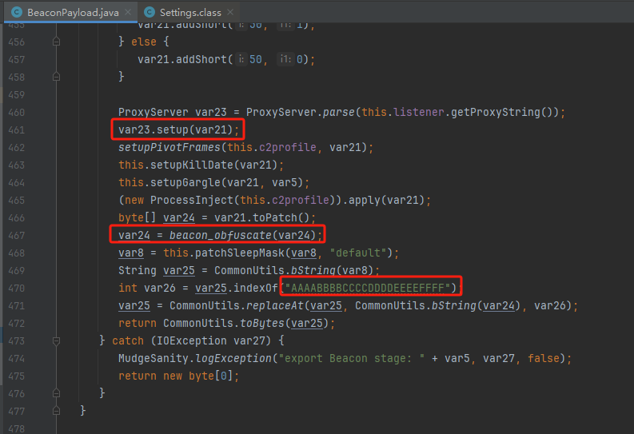
如果直接使用文本编辑器加载Beacon时无法进行解析
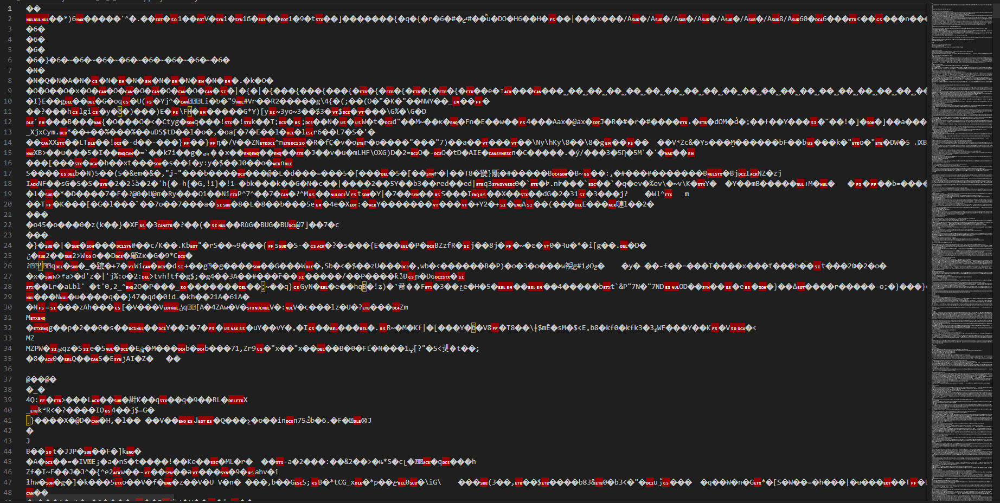
使用beacon_obfuscate方法进行异或，代码如下，也就是按位异或
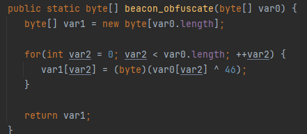
所以对Beacon解析首先需要进行自解密，自解密使用以下脚本进行
import sys
import struct
filename = sys.argv[1]
with open(filename, 'rb') as f:
data = f.read()
# 从偏移 0x45 处开始处理数据
t = bytearray(data[0x45:])
# 从偏移 0 处解析两个整数（小端格式 '<II'）
(a, b) = struct.unpack_from('<II', t)
# 使用第一个解析出的整数作为初始密钥
key = a
# 从偏移 8 处开始，获取需要解码的实际数据
t2 = t[8:]
out = bytearray()
for i in range(len(t2) // 4):
temp = struct.unpack_from('<I', t2[i * 4:])[0]
# 对数据与当前密钥进行异或解码
temp ^= key
out += struct.pack('<I', temp)
# 更新密钥为当前解码出的值
key ^= temp
output_filename = filename + '.decoded'
with open(output_filename, 'wb') as f:
f.write(out)
print(f"解码完成，结果已保存到：{output_filename}")
自解密完成后，再对文件进行2E异或，以下为从两个文件中提取出字符串进行对比，左图为从Beacon中直接提取出的字符串，没有可识读的部分，右图是经过自解密和2E异或后中提取的字符串，Beacon中的函数，字符串等都变成了明文，IP地址等信息也包含在内
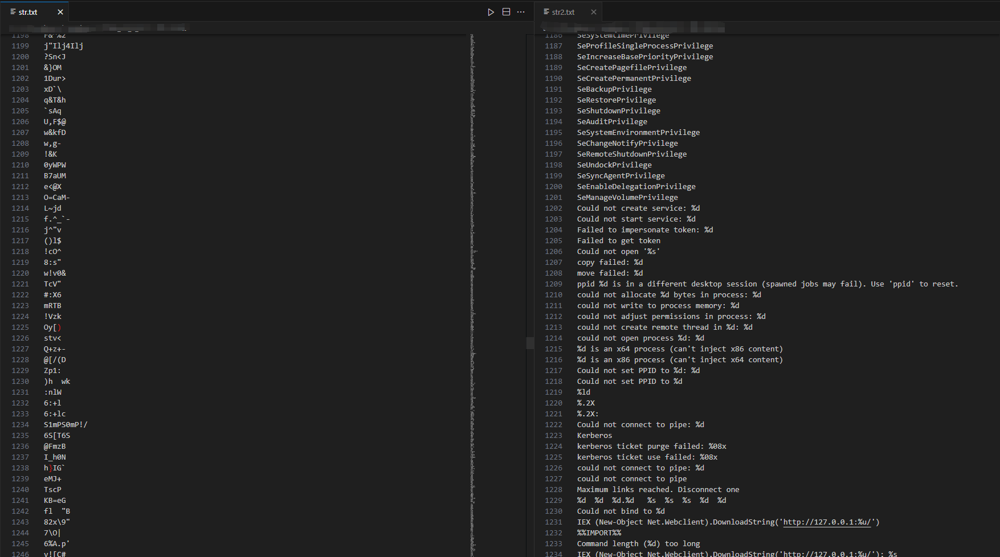
如果通过wireshark抓包，可见Beacon的通信为TLSv1.2版本
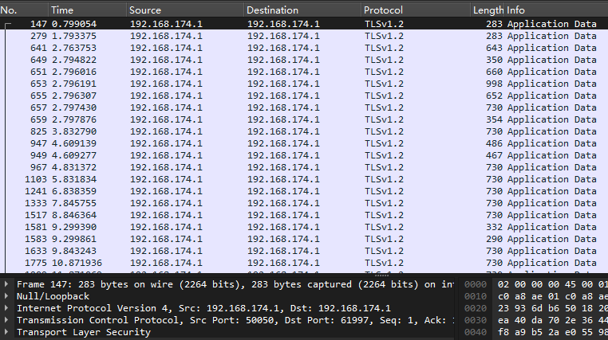
原Beacon使用公开分析工具解析后能获取大量信息
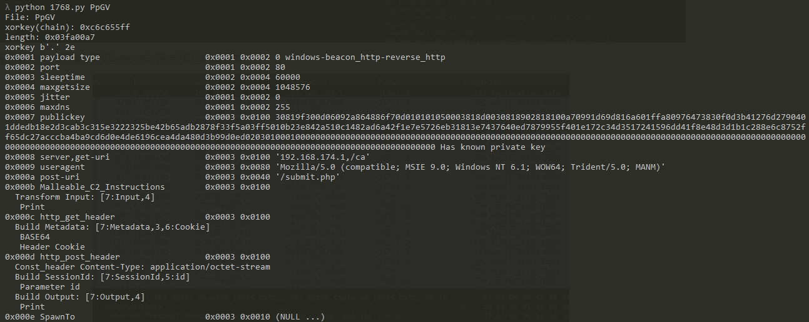
sleeve解密过程其实上面讲也都提到了，使用逆过程即可，脚本github上有很多，随便找一个就能解密了，记得找到对应的版本，因为不同版本的
key不同
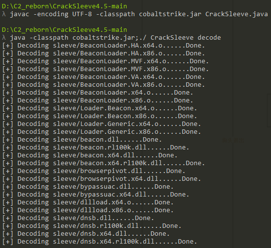
解密完成后将DLL使用IDA进行分析，具体要分析的DLL可以全局搜索.dll来搜索调用情况
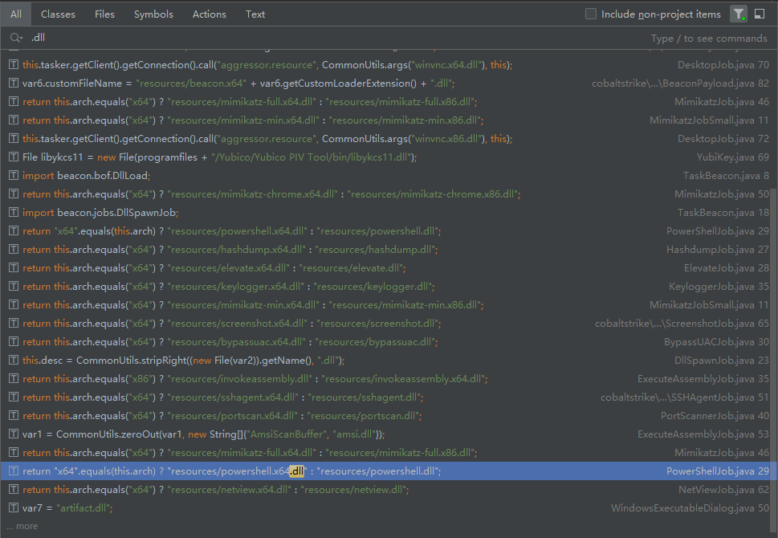
上线有关的dll在BeaconPayload.java中，在文件内筛选后涉及的主要dll如下：
beacon.dll
beacon.x64.dll
dnsb.dll
dnsb.x64.dll
pivot.dll
pivot.x64.dll
extc2.dll
extc2.x64.dll
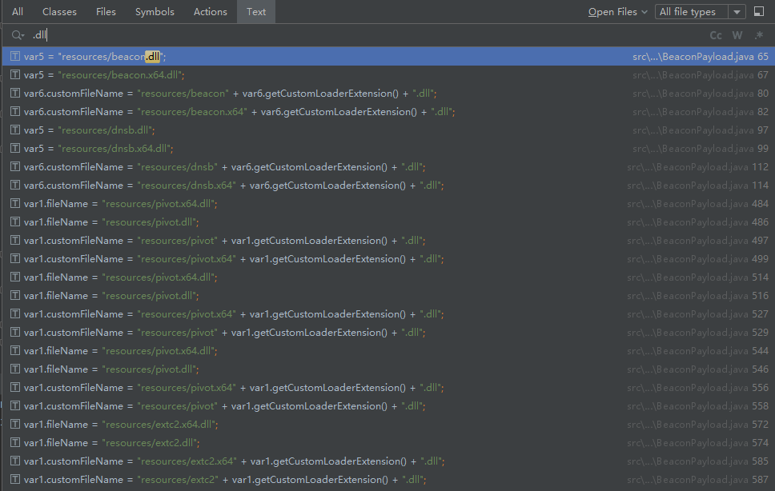
使用别人公开的Sleeve脚本进行解密
编译( javac -encoding UTF-8 -classpath cobaltstrike.jar CrackSleeve.java)
解密文件( java -classpath cobaltstrike.jar;./ CrackSleeve decode)
无需输入Key,加密文件( java -classpath cobaltstrike.jar;./ CrackSleeve encode)
使用IDA搜索原DLL中的2E（十进制为46），即beacon_obfuscate中的异或值，主要关注异或的2e
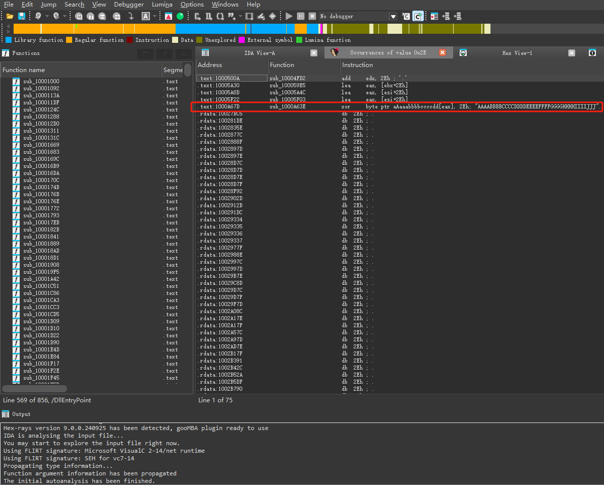
patch相关字节2e，修改为想要异或的新值，上述所有DLL按此操作
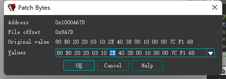
修改完成后重新加密，替换原DLL文件，网上很多师傅写的文章都是加密后替换jar包中的DLL，其实这样非常不方便（尤其是在二开的时候，我的IDEA运行配置是启动前先编译Artifact，如果不创建Resources目录每次重新替换工作量太大了…）
重新编译，需要先在文件中加入resource资源目录，为保证生成的目录和原一致，需要在sleeve目录下再建一层sleeve，否则编译成功后所有内容只能在jar包根目录下，会导致无法上线
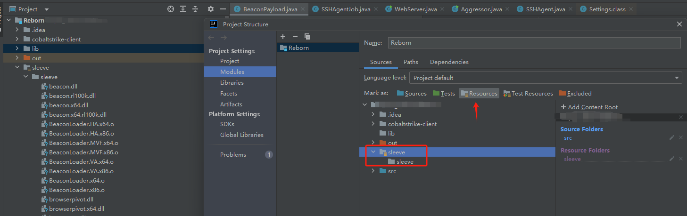
打包完成后重新测试连接性(很重要)，此时对Beacon重新分析时原分析工具已经失效
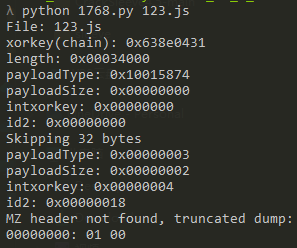
CS的东西有点多，第一篇先写到这里吧…之前写了一篇C2Profile的还没发
后面计划对CS的其他部分进行分析，比如内存特征、ArsenalKit、CNA脚本…